Easy-to-read magnetic guides for cooking, diets, laundry, and more. Designed to keep the information you need right where you can see it.
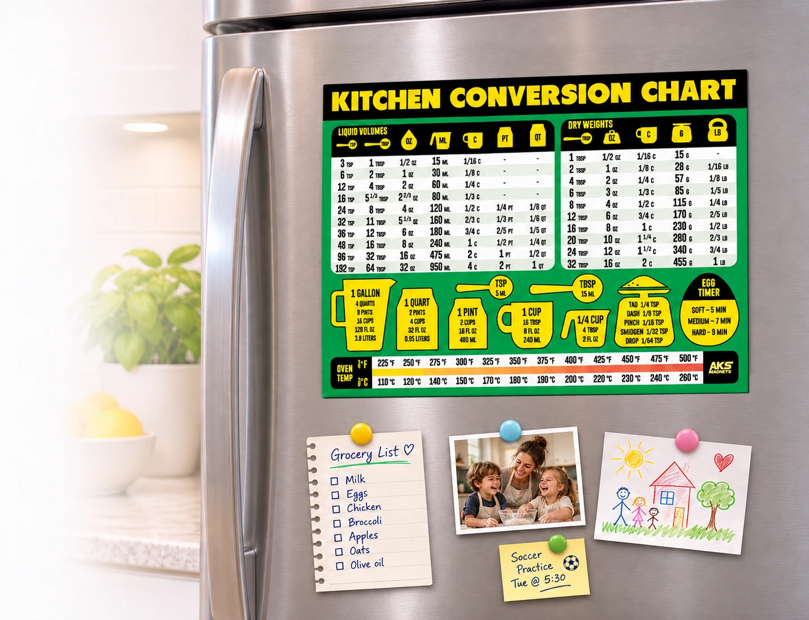
Our Best-Selling Magnets

 Kitchen Conversion Chart — Gray
Kitchen Conversion Chart — Gray
The kitchen conversion magnet reference in a neutral gray design.
View Details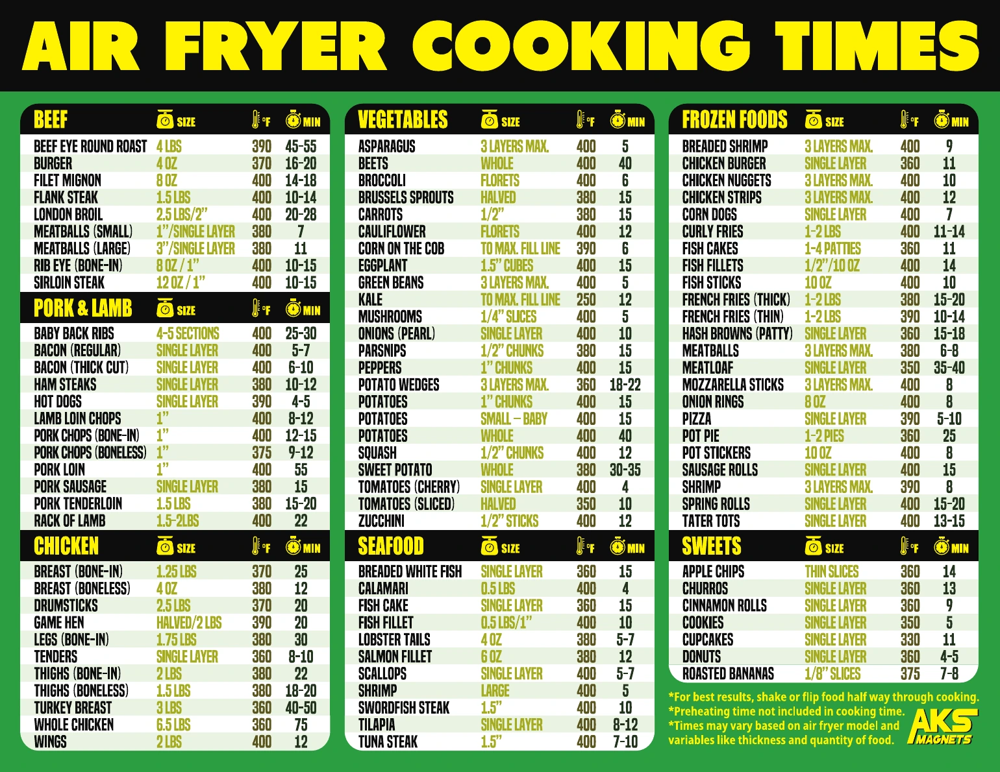
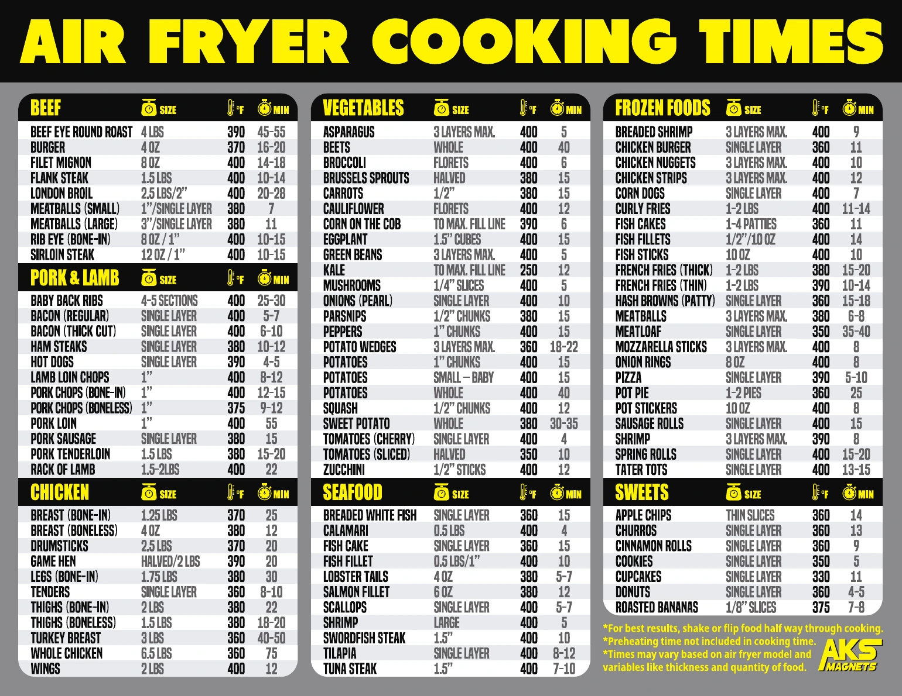
Air Fryer Cooking Times — Gray
The same air-fryer reference guide in a clean gray design.
View Details
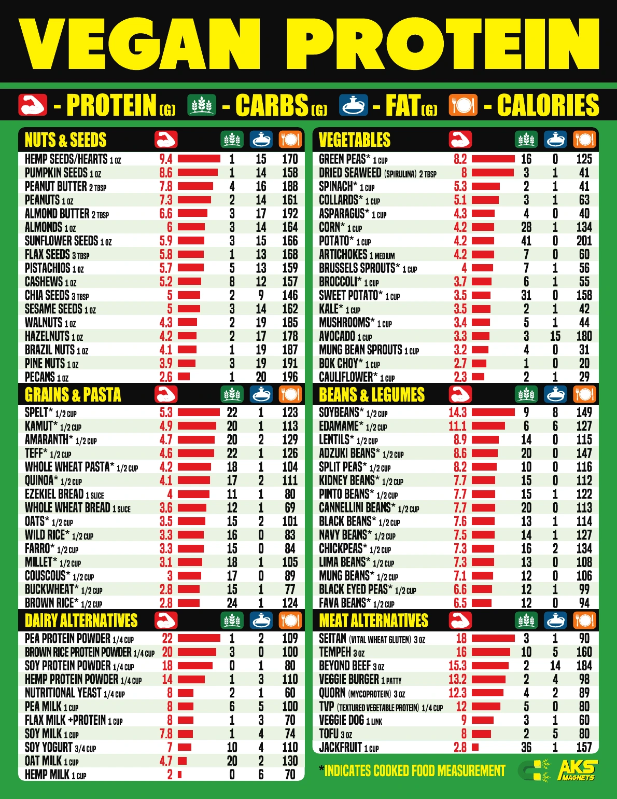
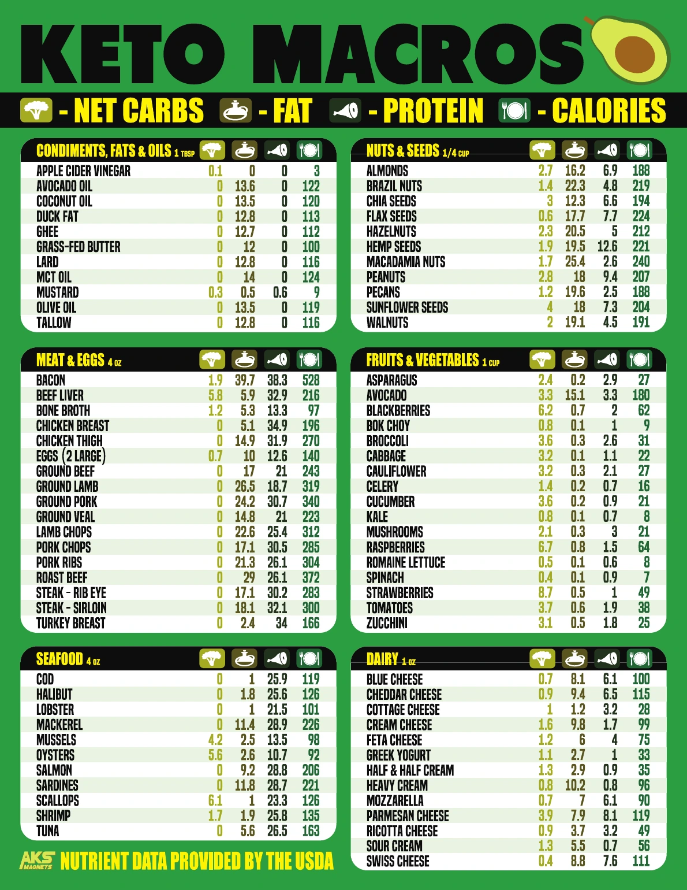
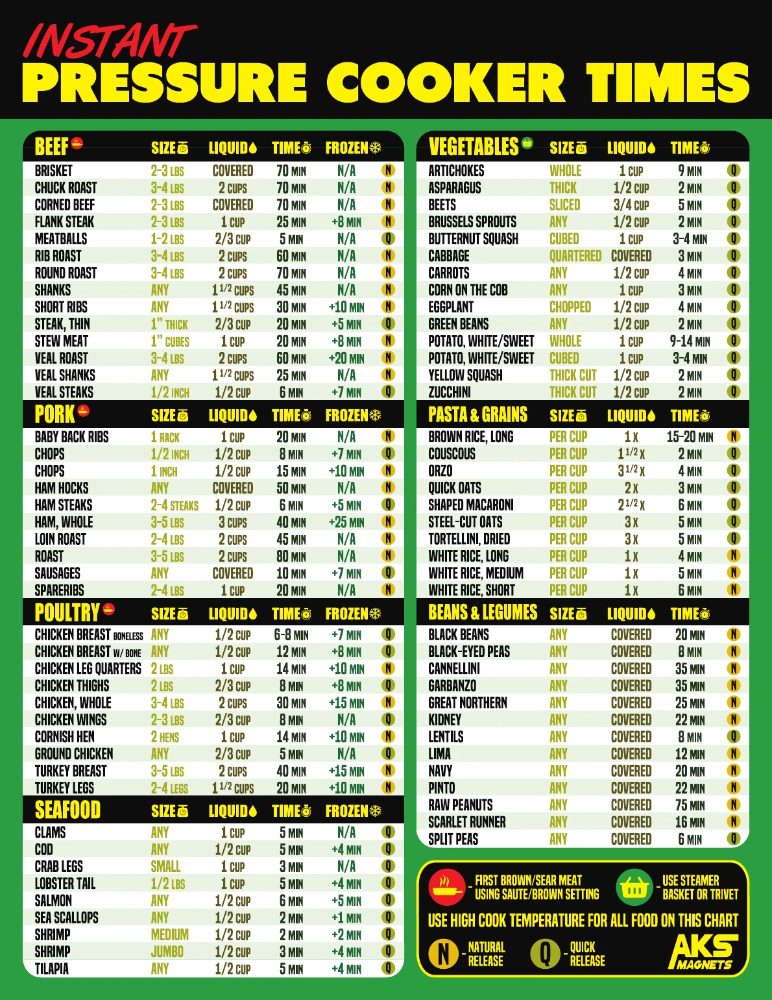
Why Customers Choose AKS Magnets
Designed to be useful, readable, and built for everyday use.
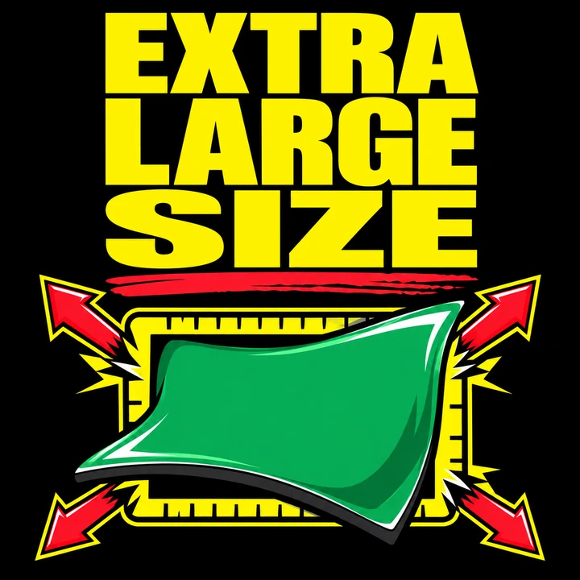
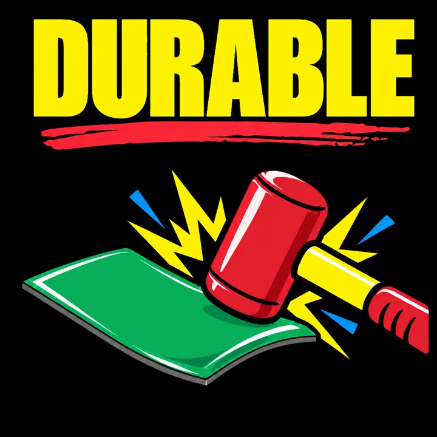
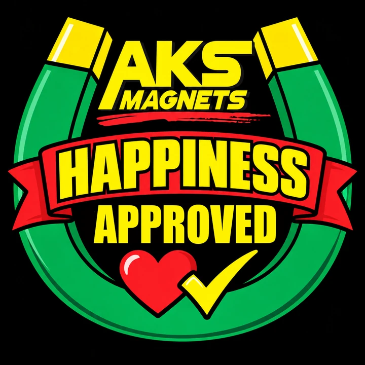
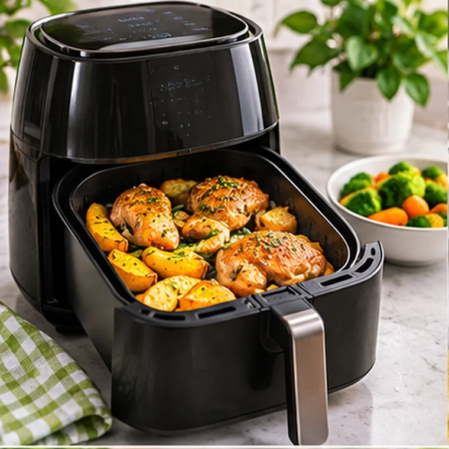
Air Fryer Cooking Times
Find air fryer temperatures, cooking times and portion sizes for vegetables, meat, seafood and frozen favorites.
View Guide →
Kitchen Measurement Conversions
Convert cups, spoons, ounces and metric measurements with easy-to-read kitchen charts.
View Guide →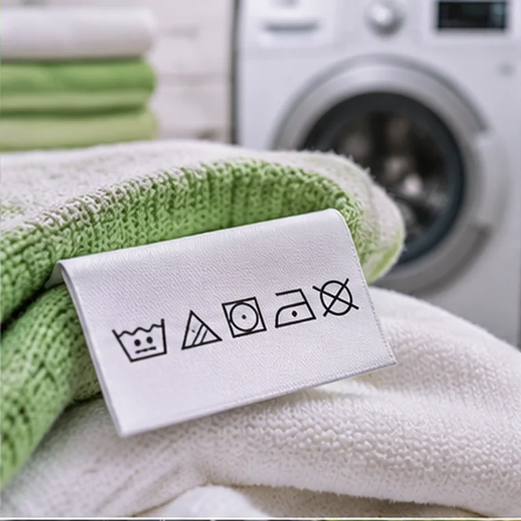
Laundry Symbols Explained
Understand washing, drying, bleaching and ironing symbols on your clothing labels.
View Guide →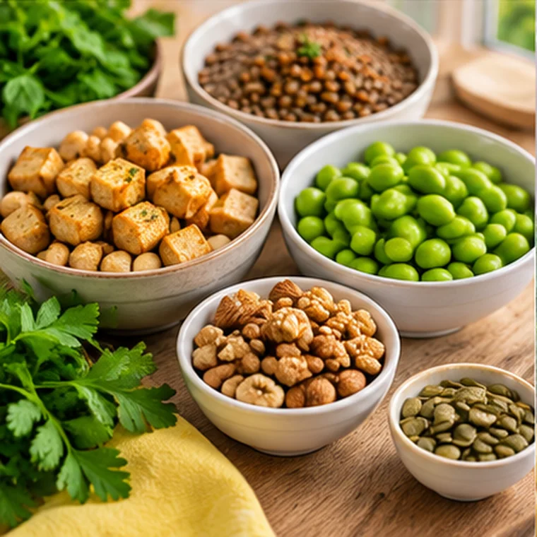
Vegan Protein Sources
Compare plant-based protein sources and approximate nutrition across everyday foods.
View Guide →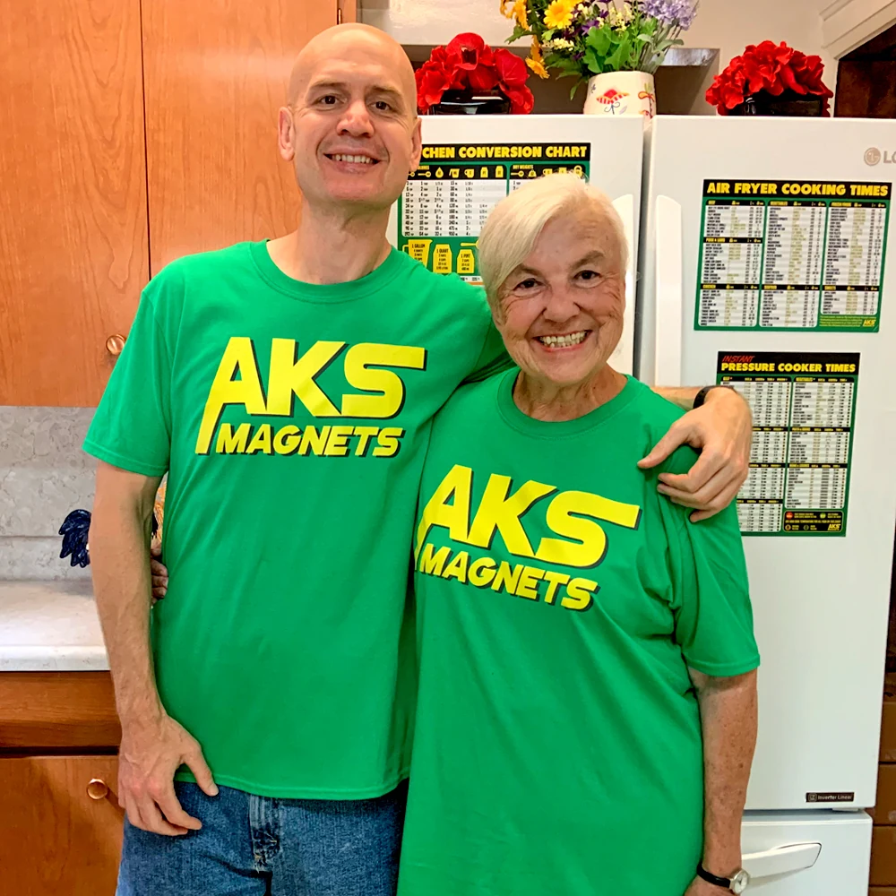
The People Behind AKS Magnets
AKS Magnets is a mother and son business. Our magnets are designed by us with commitment, quality and enthusiasm. We are a two person team that is involved in every step of the process. Our hope is that you find our magnets so useful that you smile every time you use them.